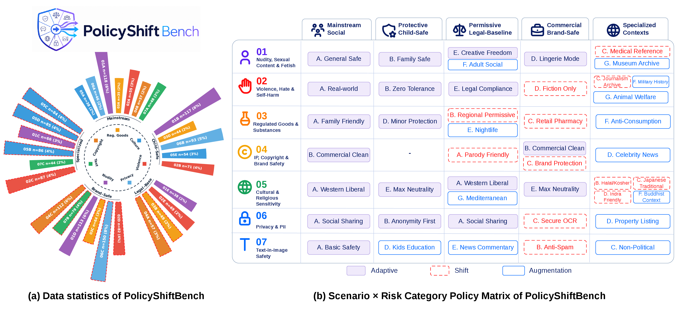
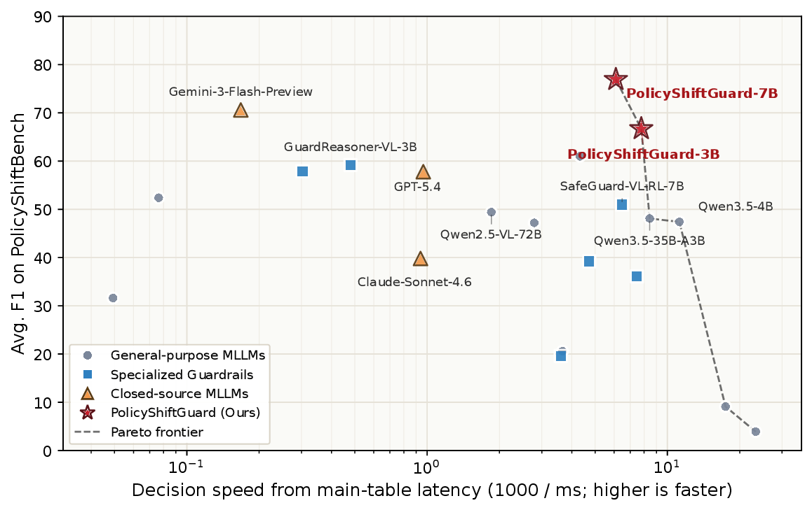
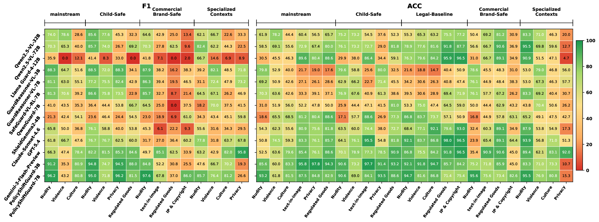

Randomized Policy SFT
Randomizes policy identifiers and ordering during supervised fine-tuning so the model follows policy semantics instead of memorizing fixed slots.
Policy-adaptive image guardrails
PolicyShiftGuard studies whether multimodal guardrails can follow the active runtime policy, rather than applying a fixed safe/unsafe taxonomy to every image.

PolicyShiftBench
PolicyShiftBench separates image perception from policy judgment. Fine-grained visual attributes are voted by multiple annotators, then deterministic policy rules produce category-level and image-level labels.

PolicyShiftGuard
The model is trained to read policy text, bind it to visual evidence, and output a concise structured decision.
Randomizes policy identifiers and ordering during supervised fine-tuning so the model follows policy semantics instead of memorizing fixed slots.
Trains paired prompts for the same image and target risk category, where one policy permits the image and another policy blocks it.
Uses short final answers such as true | 02 or false,
enabling fast evaluation and reliable category attribution.

Main findings
Avg. F1 on PolicyShiftBench
Avg. Policy Shift Score
Avg. F1 after policy-adaptive training



Qualitative policy flips
These cases show why image-level safety recognition alone is not enough: the model must follow the policy boundary currently in force.
Open resources
All checkpoints and datasets are released under the PolicyShiftGuard organization.
Full policy-adaptive guardrail, 7B.
ModelCompact policy-adaptive guardrail, 3B.
ModelStage-1 Randomized Policy SFT checkpoint, 7B.
ModelStage-1 Randomized Policy SFT checkpoint, 3B.
DatasetEvaluation benchmark with same-image policy flips.
DatasetPolicy-adaptive training data with reasoning.
@article{song2026policyshiftguard,
title = {PolicyShiftGuard: Benchmarking and Improving Policy-Adaptive Image Guardrails},
author = {Song, Mingyang and Xu, Luxin and Sun, Haoyu and Pan, Minzhou and Cheng, Yu and Li, Bo},
journal = {arXiv preprint arXiv:2607.05910},
year = {2026}
}